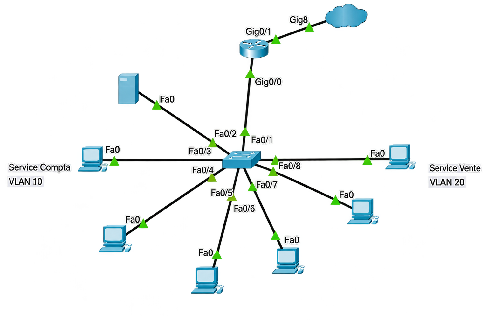

Compta en VLAN 10 et Vente en VLAN 20.
Projet réseau · Cisco Packet Tracer
Hexatrade
Simulation d’une petite infrastructure d’entreprise composée de deux services, segmentés en VLAN, avec routage inter-VLAN et services DHCP / DNS centralisés.

Vue d’ensemble
Un réseau simple à lire, assez complet pour pratiquer.
Le scénario représente deux services d’une même entreprise : Compta et Vente. Chacun possède son propre réseau IP et son propre VLAN. Un serveur unique fournit le DHCP et le DNS, tandis qu’un routeur assure la communication entre les VLAN.
192.168.10.0/24 et 192.168.20.0/24.
DHCP et DNS sur 192.168.10.10.
Router-on-a-Stick via un lien trunk.
Segmentation
Access pour les postes, trunk vers le routeur.
Les ports reliés aux terminaux sont affectés au VLAN de leur service en mode access. Le lien entre le switch et le routeur est configuré en trunk afin de transporter le trafic des deux VLAN.
Switch · VLAN 10ACCESS
interface range fastethernet0/3 - 5
switchport mode access
switchport access vlan 10Switch · vers le routeurTRUNK
interface fastethernet0/1
switchport mode trunkRouter-on-a-Stick
Une interface physique, une sous-interface par VLAN.
L’interface G0/0 du routeur transporte les deux VLAN. Chaque sous-interface utilise l’encapsulation 802.1Q et sert de passerelle au réseau correspondant.
interface gigabitethernet0/0.10
encapsulation dot1Q 10
ip address 192.168.10.1 255.255.255.0interface gigabitethernet0/0.20
encapsulation dot1Q 20
ip address 192.168.20.1 255.255.255.0Services réseau
Un DHCP et un DNS centralisés pour les deux services.
Le serveur utilise l’adresse statique 192.168.10.10. Deux pools DHCP distribuent
les paramètres adaptés à chaque VLAN. Le routeur relaie les requêtes DHCP grâce
à ip helper-address.
Attribution automatique
Chaque poste reçoit une adresse dans son réseau, son masque, sa passerelle et l’adresse du serveur DNS.
Résolution interne
Le serveur assure également la résolution DNS pour les postes des deux VLAN.
DHCP Relay
ip helper-address 192.168.10.10 permet au VLAN 20 de joindre
le serveur DHCP situé dans le VLAN 10.
Diagnostic
Le réseau ne distribuait pas les bonnes adresses.
Packet Tracer conservait un pool DHCP par défaut nommé serverPool. Il entrait en conflit avec la configuration prévue et pouvait attribuer des adresses incorrectes.
Le pool a été identifié puis déplacé vers un réseau inutilisé, ce qui a permis aux pools COMPTA et VENTE de fonctionner correctement.
01ObserverAttribution DHCP incorrecte
→
02IdentifierConflit avec serverPool
→
03CorrigerPool isolé du réseau actif
Validation
Tester avant de considérer le réseau fonctionnel.
✓ Distribution DHCP dans chaque VLAN
✓ Communication intra-VLAN
✓ Routage inter-VLAN
✓ Accès au serveur
✓ Résolution DNS
Compétences mises en pratique
Ce que ce projet me permet de montrer.
Cisco Packet Tracer
Adressage IPv4
VLAN
Ports Access
Trunk 802.1Q
Router-on-a-Stick
Routage inter-VLAN
DHCP
DNS
DHCP Relay
Diagnostic réseau